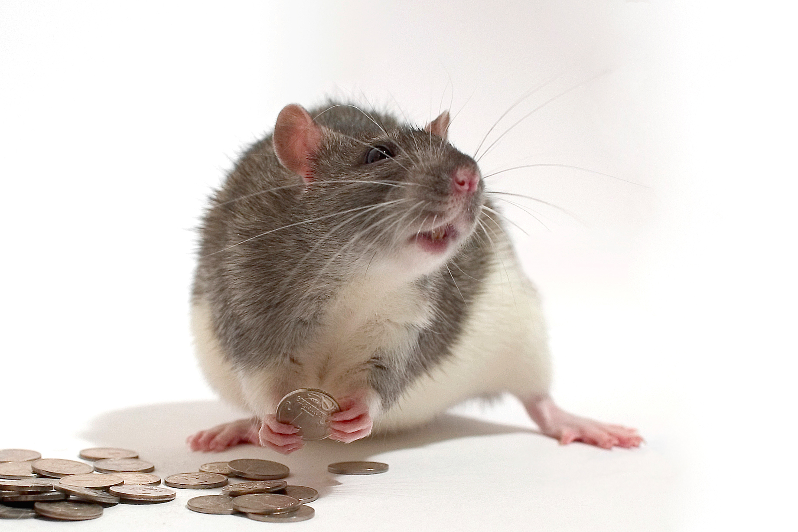

The Issue of Excessive Food Waste in the U.S.
Food is the number one component taking up space in landfills and the US throws out food more than any other country, throwing out an estimated total of 60 million tons every year. This equates to almost 40% of the entire US food supply. More food is being thrown out than necessary, as a significant portion of this food is still usable. There are various causes to this nationwide issue and people at home are the biggest contributors, as a common misconception is that food near or past its expiration date has gone bad even though in most cases it hasn’t. Expiration dates generally don’t consider a food’s edibility, but its general texture and taste, so it is generally safe to buy food that is approaching or sometimes even passed its expiration date. However, not far behind houses are businesses like restaurants and stores, which have potential hope for increased efficiency and less production of usuable food waste while providing people with an additional source of food in the process.
What are Businesses Doing Wrong?
Many wasteful business practices are commonly seen as efficient business strategies. These can include overstocked displays, the expectation of cosmetic perfection, oversized packages, foods passing their “best buy” or “sell by” dates, outdated seasonal items, and the over-purchasing of unpopular foods.
What Can be Done?

To combat the amount of edible food that is currently thrown out, the solution that seems most feasible is to allow people to take food that was originally going to be thrown away. Implementing this idea into food oriented businesses would most likely directly increase that business’ costs from the additional labor, but not by a relatively noticeable margin. The real cost that has kept this from being implemented in the past is the risk of people getting sick from eating food that has gone bad and the businesses being at fault, leading to lawsuit expenses that would also most likely hurt that business’ reputation on top of costing them potentially a large sum of money. However, businesses would also be able to throw away less, leading them to not have to spend as much on waste disposal and they would be wasting less food also because people are taking it to put it to use, which is better for the environment and landfills if the idea is implemented on a large enough scale.
Who is Involved?

Action must be taken by lawmakers. This is currently an issue, as lawmakers see it as the businesses being at fault if people get sick from free food they take. However, this is something that may be able to be changed, as it is each person’s personal choice to take the food so how are the businesses at fault? If people are informed of the potential risks, then I believe that lawmakers should consider allowing businesses to let people take the food if they choose to.
The businesses themselves see a relatively insignificant benefit not resorting to not throwing the food away, meaning that additional motive may be needed in order for as many businesses as possible to utilize their ability to throw away less and help people that could use the food.
Customers would have access to free food if they so choose to take it, which could help people financially if they happen to struggle to afford food, as food that is not in its prime state will always be better than nothing. The customers can also completely ignore this change if they choose to and buy all of their food just like before.